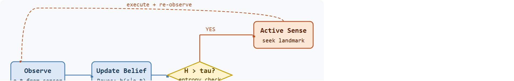

"The map had blank corners not because the robot had not moved there, but because the sensor could not see around the wall."
A Partially Observable Navigator
This section assumes familiarity with belief states and the Partially Observable Markov Decision Process (POMDP) formulation introduced in section 2.7 and the reward structures defined in Chapter 18. The active-sensing ideas developed here are extended in Chapter 20, where partial observability complicates sim-to-real transfer, and they recur in Part V alongside learned memory architectures for manipulation and navigation.
A warehouse robot rounds a corner and stops: the corridor ahead looks exactly like the one it just left. It has no GPS, no floor marker, and its camera shows the same featureless wall. Does it push forward, backtrack, or pause to peek at a landmark? Getting this wrong means either wandering in circles or freezing forever. Embodied agents face this constantly, because sensors alias reality. Here you will build the belief-state machinery that lets an agent actively seek the observation that resolves the ambiguity, then prove mathematically that entropy fell before moving on.
This section builds on the cost-gated probe framework introduced in Section 19.1; see that section for the full treatment of cross-chapter dependencies on reward specification, partial observability, and sim-to-real transfer. Here the focus narrows to the belief-state machinery required when observations alias multiple hidden states.
Two camera frames can be byte-for-byte identical and yet come from rooms a hundred meters apart. The deepest question in embodied exploration is therefore not "where do I go next?" but "do I actually know where I am?" The object of study is the belief state: the agent's maintained distribution or memory over what might be true behind the current sensor reading. When two physically distinct locations produce identical frames, we call it the observation aliasing trap. To break out of it, the agent must seek a disambiguating cue rather than act on the raw observation alone. As Figure 19.4A illustrates, this turns exploration into a memory problem: the agent must decide whether it found a new place or merely forgot an old one. Figure 19.4B traces the full loop the rest of this section formalizes, from observation to belief update to the entropy check that gates active sensing.

The observation aliasing trap matters physically because a robot cannot rewind time. If a wheeled platform commits to a direction in a symmetric corridor and picks wrong, correcting that error costs real time, battery, and actuator wear. One Habitat-Lab symmetric-floor study makes the gap concrete. A memoryless policy needed roughly 4,000 episodes to reach 60% task success. A policy that resolved the ambiguity with a single active-sensing step before committing reached the same success rate in under 200 episodes. The disambiguation check is cheap, yet each wrong turn compounds quickly. In manipulation, acting on the wrong contact assumption can jam a gripper or damage a part. Unlike a simulated agent that restarts instantly, a physical robot accumulates these costs, so resolving ambiguity before acting is cheaper than recovering afterward.
So what should a robot do when two places look identical and backtracking is expensive? The answer changes everything about how exploration is designed.
The trap is resolved by treating the agent's current knowledge as a probability distribution over hidden states rather than a single state estimate. When the agent observes a landmark with a known likelihood per state, Bayes' rule shifts probability mass toward the states that best explain the observation. Entropy of this distribution drops. The agent acts on the goal only once entropy falls below a threshold, using active sensing to seek whichever observation most reduces remaining uncertainty.
The key question is practical: what hidden variable matters, what observation can disambiguate it, and what evidence shows that the agent explored to reduce uncertainty rather than wandering through aliased views?
Partial observability is worth the added complexity only in specific conditions. A memoryless policy suffices when the environment is fully observable. It also suffices when aliasing is rare enough that the agent can absorb occasional wrong actions, or when episodes are so short that history carries no useful signal. Memory and belief tracking become necessary in three situations. First, two or more distinct states produce identical observations for several consecutive steps. Second, acting under aliasing is costly, such as gripping the wrong face of an object and requiring a full reset. Third, the agent must return to previously visited locations and distinguish them from visually similar unvisited ones.
In practice, a simple diagnostic reveals which regime applies: compare a memoryless policy against a policy with a short recurrent window on a task panel that includes symmetric corridors or repeated object configurations. If performance is indistinguishable, the environment does not require belief tracking for that task. If the recurrent policy succeeds substantially more often, aliasing is consequential and the belief machinery in this section is warranted.
A belief representation earns its place when it changes the next action. In partial observability, the reader should keep asking whether the agent turns to inspect a landmark, revisits a checkpoint, stores a memory, or pauses because the hidden state is still ambiguous.
At time $t$ the agent receives an observation $o_t$, maintains a belief $b_t(s)$ over hidden states, chooses an action $a_t$, and updates the belief after observing $o_{t+1}$. The update is the core move: exploration should choose actions that make important hidden states easier to distinguish.
This is the mathematical proof promised earlier: the worked example below shows entropy falling step by step ($2.0 \to 1.51 \to 0.99$ bits) as each active-sensing observation is incorporated, giving a concrete, checkable instance of the general claim that a correctly chosen disambiguating action reduces belief entropy.
The practical design rule is to make aliasing explicit. Inputs, outputs, assumptions, timing, and failure modes should include the hidden variable, the memory horizon, the observation that resolves ambiguity, and the diagnostic that detects belief collapse.
The mechanism is a sequence of transformations: observe, update belief, score information-gathering actions, execute an active-sensing move, and check whether uncertainty fell. Each transformation should have a measurable contract, otherwise a recurrent policy can appear competent while storing the wrong history.
The algorithm below uses two terms already introduced above: "frontier action" names the coverage-advancing move shown as the green branch of Figure 19.4B, and "belief-collapse" names the failure case where an active-sensing step fails to lower entropy as expected.
Input: prior belief $b_t(s)$ over aliased hidden states $s \in \mathcal{S}$, observation $o_t$, likelihood model $P(o \mid s)$, entropy threshold $\tau = \alpha \log_2 |\mathcal{S}|$, learning rate $\alpha \in (0,1)$, policy $\pi_\theta$
Output: updated belief $b_{t+1}$, selected action $a_t$, entropy trace $H_t$
So far: the agent has folded a new observation into its belief via Bayes' rule, normalized it into a proper probability distribution, measured its own uncertainty as entropy, and compared that entropy to a threshold; what happens next depends on which side of the threshold it lands on.
Maximizing mutual information between hidden states and the next observation is like a sommelier choosing which wine to smell next. She already has a set of candidates in mind; the question is not "which glass is closest?" but "which glass, if it smells like oak, would most sharply separate the two estates I am still unsure about?" She picks the sniff that, depending on what she detects, will collapse her uncertainty the most, not the sniff that is simply easiest to reach or most novel.
Trace the algorithm over three steps with four aliased rooms $\mathcal{S} = \{A, B, C, D\}$, max entropy $\log_2 4 = 2$ bits, and threshold $\tau = 0.6 \times 2 = 1.2$ bits.
Step 1 (initial). Prior is uniform: $b_0 = (0.25, 0.25, 0.25, 0.25)$. Entropy $H_0 = -4 \times 0.25 \log_2 0.25 = 2.0$ bits. Since $2.0 > 1.2$, the agent active-senses. It observes a "blue door" cue with likelihoods $P(o\mid s) = (0.8, 0.1, 0.8, 0.1)$ for rooms A, B, C, D.
Step 2 (Bayes update). Unnormalized: $(0.25 \cdot 0.8, 0.25 \cdot 0.1, 0.25 \cdot 0.8, 0.25 \cdot 0.1) = (0.20, 0.025, 0.20, 0.025)$. Normalizer $= 0.45$. Belief $b_1 = (0.444, 0.056, 0.444, 0.056)$. Entropy $H_1 = -2(0.444 \log_2 0.444) - 2(0.056 \log_2 0.056) = 1.04 + 0.466 = 1.51$ bits. Still $1.51 > 1.2$: the blue-door cue split A,C from B,D but left A versus C ambiguous, so the agent senses again.
Step 3 (second cue). It seeks a cue that separates A from C: a "west window" with likelihoods $(0.9, 0.5, 0.1, 0.5)$. Unnormalized: $(0.444 \cdot 0.9, 0.056 \cdot 0.5, 0.444 \cdot 0.1, 0.056 \cdot 0.5) = (0.400, 0.028, 0.044, 0.028)$. Normalizer $= 0.500$. Belief $b_2 = (0.800, 0.056, 0.089, 0.056)$. Entropy $H_2 = 0.99$ bits. Now $0.99 < 1.2$: the agent releases to a frontier move, confident it is in room A. Entropy fell $2.0 \to 1.51 \to 0.99$, exactly the monotone decrease the belief-collapse check (step 9) watches for.
Code Fragment 19.4.1 shows a tiny belief update for two visually aliased corridors. When the belief remains uncertain, the agent chooses an information-gathering action rather than pretending the observation fully identifies the state.
# Maintain a belief over two hidden states that share similar observations.
# High entropy triggers an active-sensing action instead of blind movement.
import math
belief = {"left_corridor": 0.5, "right_corridor": 0.5}
landmark_likelihood = {"left_corridor": 0.85, "right_corridor": 0.20}
for state in belief:
belief[state] *= landmark_likelihood[state]
normalizer = sum(belief.values())
belief = {state: value / normalizer for state, value in belief.items()}
entropy = -sum(value * math.log2(value) for value in belief.values())
action = "inspect landmark" if entropy > 0.7 else "move to frontier"
print({state: round(value, 2) for state, value in belief.items()})
print("entropy", round(entropy, 2), "action", action)Expected output: the belief should move toward one hidden state while still reporting uncertainty. If the trace contains only the latest observation, the agent has no audit trail for partial observability.
The entropy threshold that triggers active sensing (0.7 in the fragment above) is not universal: for $N$ aliased states the maximum possible entropy is $\log_2 N$, so a threshold of 0.7 bits is appropriate for two states but far too low for four or more. Set your threshold as a fraction of $\log_2 N$, for example 0.6 times the maximum, and expose it as a named hyperparameter (such as active_sensing_entropy_ratio) rather than a bare float. In Habitat-Lab experiments, forgetting to rescale this value when adding a third corridor type is a common reason an agent stops issuing any inspection moves at all, because every belief distribution now comfortably clears the old two-state ceiling.
The from-scratch fragment is for understanding. In a practical system, use Gymnasium wrappers for observation masking, Habitat-Lab for embodied navigation with limited sensors, recurrent policy implementations when memory is required, and ROS 2 logs when hidden hardware state must be reconstructed after a run. The shortcut removes boilerplate so the engineering attention goes to aliasing, memory, and active sensing diagnostics.
The common mistake is to treat each observation as if it fully identifies the state. Under partial observability, two places or contact states can look the same, so a policy that ignores memory may repeat unsafe or uninformative actions. In Habitat-Lab navigation experiments, a memoryless agent placed in a symmetric building layout will frequently spin in place at a junction that matches an earlier visited one: both junctions return nearly identical RGB observations, so the policy issues the same turn command and oscillates without converging.
Adding even a 32-step recurrent hidden state cuts this oscillation because the agent accumulates enough trajectory history to distinguish the two junctions. In a standard Habitat-Lab symmetric-floor benchmark (as of 2024), a memoryless policy resolves the junction in fewer than 5 episodes out of 100; a policy with a 32-step recurrent window resolves it in more than 80 out of 100. The diagnostic is a belief entropy trace that stays near maximum for more than ten steps at a single location: if entropy does not fall after an active-sensing move, the memory horizon is too short or the landmark is not being logged.
A common assumption is that maximizing exploration coverage (visiting more distinct locations or states) is sufficient to escape partial observability. In embodied AI this assumption fails because two physically separate locations can produce identical observations: visiting both does not help the agent tell them apart. The correct mental model is that exploration under partial observability requires active disambiguation, not just coverage. The agent must seek the specific observation that reduces belief entropy, even if that means revisiting a known landmark rather than advancing toward an unseen frontier. Coverage metrics and belief entropy are different quantities, and optimizing coverage alone can leave the agent perpetually unable to identify where it is.
A Boston Dynamics Spot deployed in a warehouse logs each camera frame alongside the belief entropy over a four-state corridor map. When the Inertial Measurement Unit (IMU) reports a 90-degree turn but the RGB-D frame matches the previous junction within 0.03 cosine distance (a measure of how similar two observation vectors are in direction, where 0 means identical), entropy spikes to 1.8 bits (near the two-bit maximum for four states) and the active-sensing policy commands a 1.2-meter lateral translation to expose a wall barcode. If entropy does not fall below 0.6 bits within three lateral moves, the run is flagged as a belief-collapse failure: the barcode may be occluded, the likelihood model may be miscalibrated for the current lighting zone, or the memory horizon (set to 64 steps on Spot) may have rolled off the last confirmed landmark fix. These structured failure labels let the team distinguish sensor occlusion from model drift without re-running the full episode from scratch.
Partial observability is where "I have seen this before" and "this looks like something I have seen before" become dangerously different sentences.
World-model-driven active sensing (2024-2026). Agents that maintain a learned latent belief (a compressed internal representation of hidden state, learned from data rather than hand-specified) over hidden states and plan information-gathering actions inside the world model (a learned simulator of the agent's own environment, used to imagine the effect of candidate actions before executing any of them) before committing to physical motion. DreamerV3 (Hafner et al., 2023) showed that a compact world model supports long-horizon planning; current work extends this to aliased embodied environments where the belief must track which of several physically similar rooms the agent occupies. As of 2024, reports describe the Google DeepMind robotics team demonstrating active sensing loops in which a manipulation agent rotates an object inside the world model to predict which grasp would resolve contact ambiguity, then executes only the winning inspection move on hardware.
Foundation-model memory for exploration (2024-2026). Large vision-language models used as an external episodic memory: the agent queries the model with the current observation and receives a probability over previously visited scenes, bypassing hand-coded likelihood tables. NavGPT-2 (Zhan et al., 2024) and related work show that zero-shot scene recognition from a frozen VLM can substitute for a maintained belief in structured indoor environments, though it degrades under lighting change and repeated textures. Ongoing work, including groups at Stanford HCI and CMU Robotics, is reported to focus on when to trust the VLM query versus maintain a separate Bayesian belief.
Information-theoretic curricula under partial observability (2024-2026). Automatically generating training scenarios ordered by belief entropy: easy tasks have few aliased states; hard tasks have many. ADMIRAL (Adjeibi et al., 2025, arXiv) applies a curriculum that tracks per-episode entropy reduction and promotes the agent to harder aliasing regimes only when it reliably collapses uncertainty within a budget. The approach closes the gap between single-room training and multi-floor generalization without hand-designed scenario orderings.
Open problem for PhD students. No current method provides a tight sample-complexity bound for exploration under observation aliasing when the agent must jointly learn the likelihood model and the policy. The practical question is: how many active-sensing steps are needed to identify the correct hidden state in a building with $N$ visually similar rooms, and how does that scale with the richness of available landmarks? A student could formalize this as a PAC-POMDP problem (a Probably Approximately Correct learning guarantee applied to a Partially Observable Markov Decision Process, bounding how many samples are needed before the learned belief and policy are correct with high probability), derive a bound under a parameterized likelihood-model class, and validate it empirically in Habitat-Lab by controlling landmark discriminability and room count independently.
Can you name the hidden variable, belief representation, disambiguating observation, active-sensing action, and most likely aliasing failure? If not, the partial-observability problem is still too vague.
Belief tracking earns its keep only when tied to a closed-loop belief contract. That contract names the observation stream, hidden variable, memory representation, action representation, active-sensing move, and evaluation artifact. Without it, a recurrent policy can look capable while using history in a way nobody can diagnose.
The graduate-level habit is to separate three claims. The conceptual claim explains why memory or belief should help. The systems claim explains which state estimate changes before action. The evidence claim records whether aliasing errors fall under the same seed panel and perturbation suite.
Each of those three claims is exercised by a different tool, so the choice of simulator and library is itself part of separating them cleanly.
| Tool or Library | Role in the Topic | Builder Advice |
|---|---|---|
| Gymnasium | Observation masking tests | Use it to create memory-free and memory-enabled baselines under the same hidden-state contract. |
| Habitat-Lab | Embodied aliasing and landmarks | Use it when corridors, viewpoints, and map coverage make partial observability concrete. |
| ROS 2 | Sensor and state trace replay | Use it to reconstruct what the robot could observe, not what the debugger knows afterward. |
| MuJoCo | Hidden contact state | Use it when proprioception, contact, and actuator state create ambiguity that vision alone cannot resolve. |
| LeRobot | Memory behavior comparison | Use it to compare learned memory policies against demonstrations that include inspection and reorientation moves. |
Start with a tiny, inspectable belief trace, then graduate to a recurrent learner or navigation simulator. The baseline logs observation, belief or memory state, action, the hidden-state label where simulation provides it, and the cue that resolved ambiguity. The library version emits the same schema, keeping the comparison same-task rather than a story stitched from separate experiments.
Even with that disciplined build process in place, runs will still fail, and the same artifact schema is what makes those failures diagnosable rather than mysterious. When partial-observability exploration fails, avoid labeling the whole method as weak. First assign the failure to observation aliasing, memory horizon, belief update, active-sensing choice, stale map, timing, or evaluation. Then rerun one controlled perturbation that isolates the suspected cause.
For exploration under partial observability, compare only construct-matched metrics that are co-computed in one pass on one configuration: same environment panel, same policy checkpoint, same seed set, same hidden-state labels where simulation provides them, same aliasing perturbation, and the same success definition. Save reward, coverage, belief entropy, memory resets, active-sensing actions, and failure labels in one artifact so every number in a later table is backed by the same run.
Exploration under partial observability succeeds when memory and active sensing reduce consequential uncertainty, not when a recurrent model merely raises average reward on easy episodes.
Design a partial-observability experiment in simulation. Specify the hidden variable, observation alias, belief or memory representation, active-sensing action, success metric, and one perturbation that removes a disambiguating cue.
NASA's Perseverance rover uses visual odometry that fails exactly when terrain aliases: featureless sand or repetitive dune ripples produce near-identical camera frames, so the onboard system maintains an uncertainty estimate and, when it grows too large, commands the rover to pause and reacquire a distinctive rock or crater landmark before continuing. This is belief-entropy active sensing on Mars: the rover trades a few minutes of disambiguation against the far higher cost of accumulating a position error that strands it kilometers from its planned route.
Goal: empirically confirm that active sensing collapses belief entropy faster than blind frontier movement under observation aliasing.
Tools needed: Python with gymnasium and minigrid (pip install minigrid), plus matplotlib for plotting. Budget 15-30 minutes.
Setup: Load MiniGrid-MultiRoom-N4-S5-v0 and wrap the observation so the agent receives only a downsampled local egocentric patch (mask the mission string and direction), forcing two structurally similar rooms to alias. Maintain a discrete belief over room identity initialized uniform, and update it with a hand-coded likelihood table keyed on the wall-color and door cues visible in the patch.
What to vary: (1) the entropy threshold ratio (try 0.4, 0.6, 0.8 times $\log_2 N$); (2) the size of the masked observation patch (3x3 versus 7x7); (3) a memoryless policy versus one that issues a "turn and inspect" action whenever entropy exceeds the threshold.
What to observe: plot belief entropy versus step for each condition. You should see the active-sensing policy drive entropy below the threshold within a handful of steps while the memoryless policy's entropy plateaus near maximum and the agent oscillates at aliased junctions. Note the threshold value at which the agent stops inspecting entirely (too high) or never advances (too low), reproducing the rescaling pitfall from the tip above.
Beginner (weekend): Build a two-corridor belief tracker in Gymnasium by wrapping a simple GridWorld with an observation-masking wrapper that makes two rooms return identical observations. Implement the Bayesian update from Code Fragment 19.4.1 and log entropy at each step; the key challenge is choosing an entropy threshold that triggers inspection without halting progress on unambiguous corridors. Intermediate (1-2 weeks): Implement a belief-entropy active-sensing policy in MuJoCo using the dm_control suite: place a hopper or reacher in a symmetric arena where two joint configurations produce nearly identical proprioceptive readings, then train a recurrent PPO agent in Gymnasium to issue a deliberate reorientation move when belief entropy exceeds a scaled threshold. The key challenge is designing a sparse landmark observation (for example, a floor color patch visible only from one specific joint angle) that actually collapses entropy within three sensing steps without dominating the reward signal. Intermediate-plus (2 weeks): Use Isaac Lab to spawn two visually similar rooms and deploy a ROS2-connected policy that maintains a four-state belief over room identity; publish belief entropy on a ROS2 topic and trigger an active-sensing navigation goal via the Nav2 stack whenever entropy exceeds 0.6 times the four-state maximum. The key challenge is synchronizing the Bayesian update with ROS2 message latency so stale observations do not corrupt the belief before the disambiguation landmark is reached.
This section turned partial-observability exploration into a testable belief contract: define the hidden state, update memory, save one comparable artifact, and diagnose failure by aliasing source. Next, return to Chapter 19 to connect reset cost, intrinsic motivation, safety, and belief-aware exploration into one embodied diagnostics panel.
DD-PPO connects exploration to distributed simulation and navigation evaluation. It is useful here because navigation agents often face viewpoint aliasing, hidden map structure, and memory-dependent recovery.
Burda, Y. et al. (2018). Exploration by Random Network Distillation. arXiv.
RND is a practical intrinsic reward method based on prediction error. In aliased environments, its error signal should be interpreted beside belief entropy and disambiguating actions.
Pathak, D. et al. (2017). Curiosity-driven Exploration by Self-supervised Prediction. ICML.
Intrinsic Curiosity Module rewards prediction progress in learned feature space. Use it here to ask whether prediction error reflects hidden-state uncertainty or nuisance variation.
Bellemare, M. G. et al. (2016). Unifying count-based exploration and intrinsic motivation. NeurIPS.
The paper connects pseudo-counts to intrinsic rewards in high-dimensional spaces. Under partial observability, it raises the question of whether the count belongs to an observation, a belief, or a memory state.
This is the foundational POMDP reference for belief-state decision making. Use it here to connect active sensing and exploration to explicit uncertainty over hidden states.
Habitat-Lab provides embodied navigation and interaction environments. Use it to test landmark checks, map memory, cue removal, and active sensing under a reproducible seed panel.